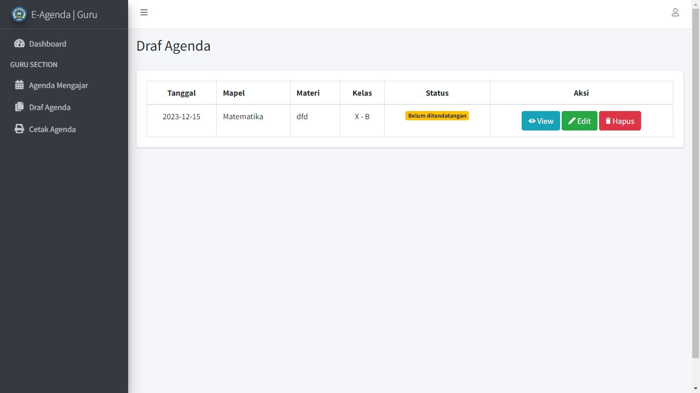

This project was the first one I worked on to fulfill the graduation requirement for my internship at university. It was the development of a web-based application designed to help teachers manage their teaching agendas. The application was specifically built for teachers at SMA Dharma Kusuma in Cianjur, Indonesia. The development used PHP as the programming language and Laravel as the backend framework, along with frontend frameworks such as Bootstrap. I successfully completed the application within the given timeline and received positive feedback from the users.

E-Agenda
Web-based application for managing and organizing events, tasks, and schedules.
February 2023
August 2023

This design was intended specifically for the teacher role. There are three roles in total, each with its own user interface and features designed specifically for their needs.